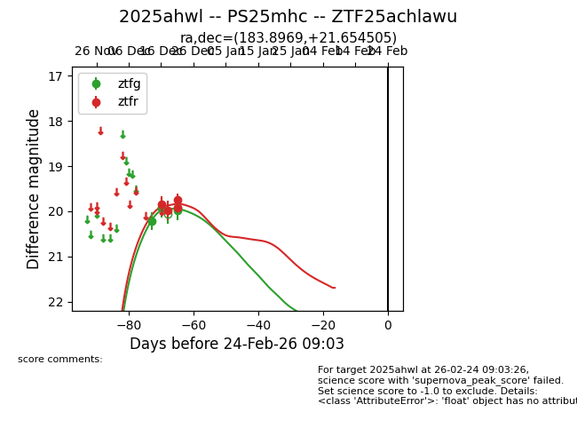
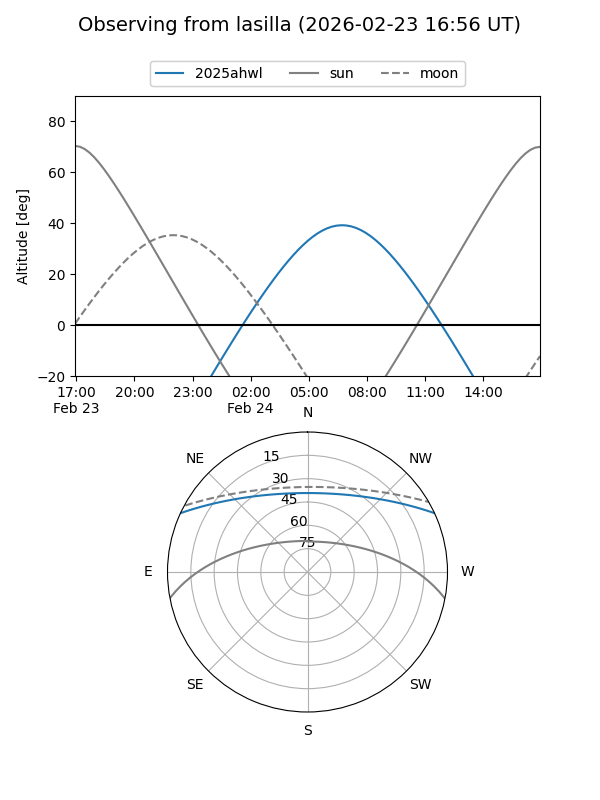
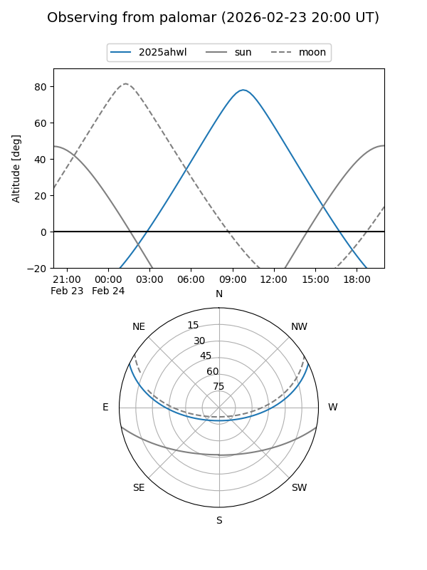
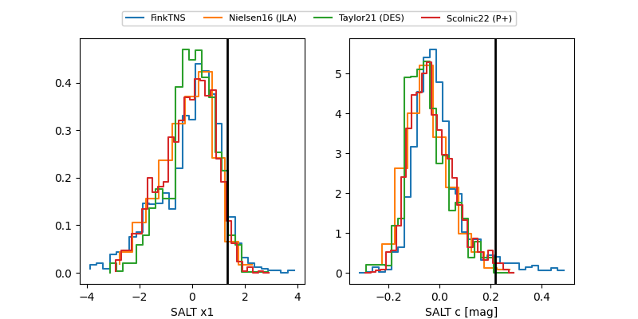

2025ahwl
Target 2025ahwl at 2026-01-09 12:49
Aliases and brokers:
FINK: link
Lasair: link
ALeRCE: link
TNS: link
YSE: link
alt names
ZTF25achlawu (ztf,fink_ztf)
2025ahwl (tns,yse)
PS25mhc (panstarrs)
Coordinates:
equatorial (ra, dec) = 183.8969,+21.65450
equatorial (HMS+DMS) = 12:15:35.25,+21:39:16.22
galactic (l, b) = (244.8571,+80.17729)
Flags:
Photometry:
last ztfg=19.93, ztfr=19.91
5 ztfg, 4 ztfr detections
Lightcurve

Visibility


Additional plots
